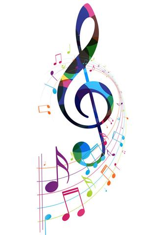

 Music is something that we all have a fine love for. Music has the power to bring out the best in people or the moments they're enjoying. The best kind of music, is the kind you can connect with and form close bonds with. Not to mention the overall raw feelings and emotion we can produce alongside a good song.
This website is the product of our team created for music enthusiasts, lovers, and creators around the world. Our client looks to help teach those interested about music and creating it.